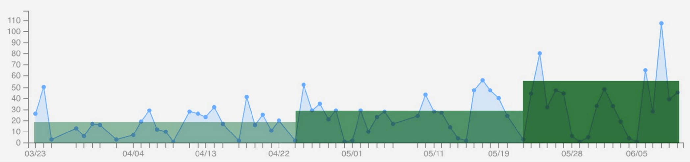

Introduction
In this section we will dive deep on the process of iterating through the high level user interface of ClientComm and how we made early concessions to get the product out and used client use and observed demand areas to guide our focus.
Click the numbers in the top title area to select to view an overview of each major iteration of ClientComm. Within each Major iteration were a series of concurrent development cycles focused on ClientComm aspects outside the front-end user interface, as well as other areas of development outside of the ClientComm product entirely.
Overview
 Simple segmentation of ClientComm use and activity temporally, by which version of the application was deployed.As visible in the above graphic, the measured use graph for ClientComm has been divided into three sections. Each section correlates with a different version of ClientComm (1.0+, 2.0+, and, presently, 3.0+). In the following three subsections (listed 1, 2, and 3), each version is described in further detail. Pain points observed are listed. These primary issues formed the core target of each cycles sprint. We believe that increased use of the application correlates with subsequent releases of new ClientComm versions because these versions targeted the most pressing needs observed from the prior new version rollout.
Overview / Initial Prototype